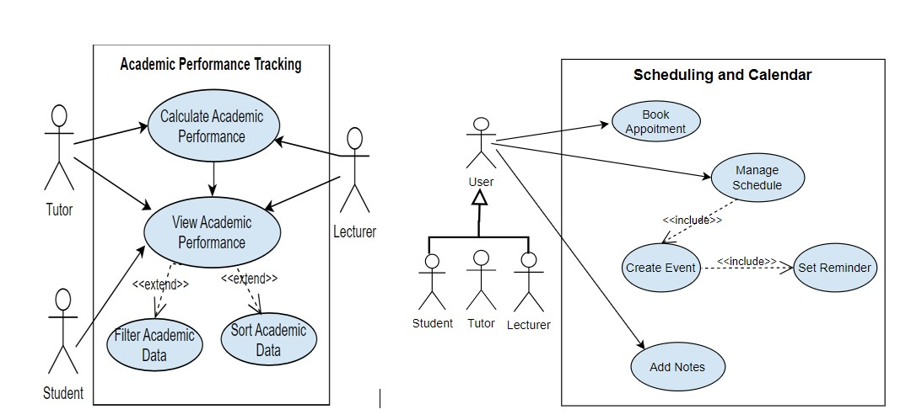
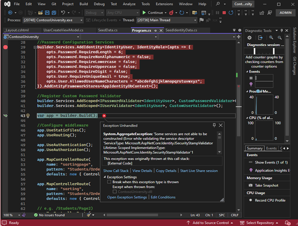
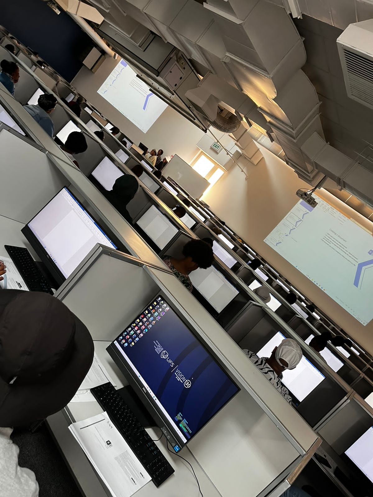
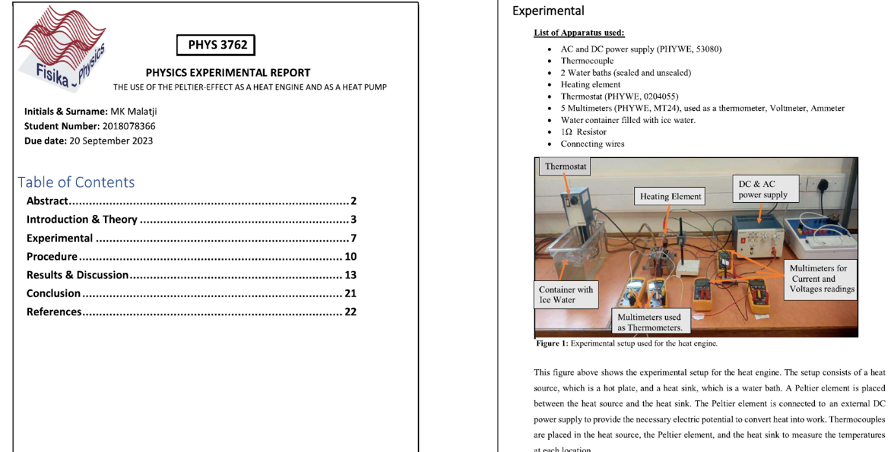
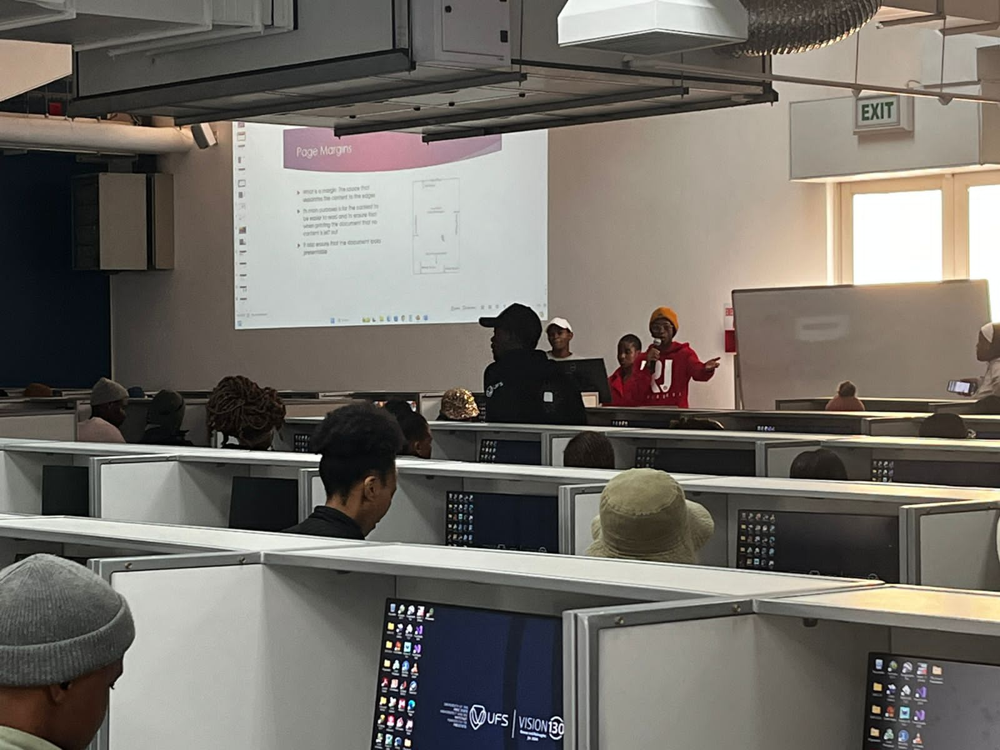
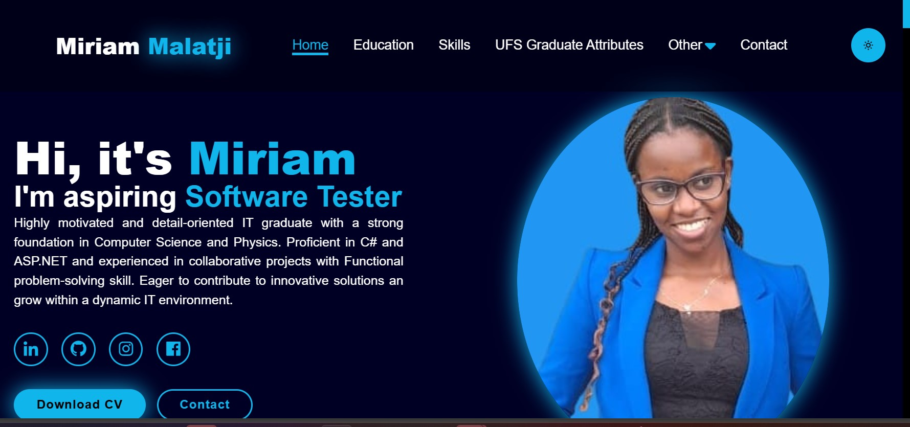

Bsc in Inforamtion Technology
- University of the Free State
- Bloemfontein
- Majoring in Computer Science and Physics.
Highly motivated and detail-oriented IT graduate with a strong foundation in Computer Science and Physics. Proficient in C# and ASP.NET and experienced in collaborative projects with Functional problem-solving skill. Eager to contribute to innovative solutions and grow within a dynamic IT environment.
Role:ASP.NET Software Developer
Role: Collaborator
In creating a Use Case Scenario Diagram, I applied critical thinking by carefully evaluating client requirements to ensure that all essential user interactions were captured. I analyzed how different users would interact with the system and identified key functionalities needed to create a user-friendly interface. This process required me to question assumptions, prioritize features, and logically structure user actions to enhance usability. By organizing the system’s responses to various user inputs, I was able to identify potential challenges and make informed decisions to improve the overall design. Through this, I demonstrated problem-solving skills and a systematic approach to developing an intuitive interface that aligns with user expectations.
As a student in Computer Science and Physics, problem-solving is a daily practice. Whether debugging code, optimizing algorithms, or tackling physics equations, I continuously apply logical reasoning and analytical skills. My coursework, particularly in Data Structures, Software Engineering, and Modern Physics, has trained me to approach problems methodically and find efficient solutions. Additionally, my practical work and projects have reinforced my ability to troubleshoot and resolve technical challenges.
I have demonstrated strong oral communication skills through a Statistical Physics presentation on thermodynamic ensembles, the Boltzmann distribution, and quantum statistics, where I explained complex mathematical concepts and their real-world applications. I also participated in a community outreach program, delivering computer literacy training sessions to the Mangaung community, which helped me develop strong communication, presentation, and organizational skills while fostering community development..
I maintained detailed physics laboratory logbooks, documenting experimental procedures, observations, calculations, and results with clarity and precision. Writing experimental reports enhanced my ability to present complex scientific data logically, adhering to structured formats and scientific conventions. Conducting literature reviews strengthened my skills in summarizing, synthesizing, and critically analyzing research while maintaining a coherent narrative. Additionally, I ensured high-quality code comments and documentation to improve readability and maintainability
I participated in a community outreach program to teach computer literacy. Through this initiative, I engaged with the Mangaung community. I conducted training sessions on basic computer skills and applications. These sessions covered Microsoft Word, Excel, and general digital literacy. By teaching others, I developed strong communication skills. I learned how to present complex concepts in a simple, clear manner. This experience also enhanced my ability to organize structured lessons. I had to plan sessions to ensure effective knowledge transfer. Interacting with diverse learners improved my adaptability and patience. I also gained confidence in public speaking and group facilitation. Beyond teaching, I contributed to community development efforts. This experience reinforced the value of knowledge-sharing and empowerment. It strengthened my teamwork and problem-solving abilities.
My ePortfolio itself showcases my technical and digital competencies. I have structured it to highlight my skills, experiences, and projects. Through this platform, I present my ability to work with various technologies. It serves as a digital space where I document my learning journey. I maintain a GitHub repository to demonstrate my coding experience. There, I have uploaded a project that reflects my problem-solving abilities. This project showcases my understanding of software development principles. I have applied programming concepts to create functional solutions. By maintaining this repository, I practice version control and collaboration. It allows me to track changes and improve my code over time. This demonstrates my commitment to continuous learning and improvement.

Email
malatjimiriam7@gmail.com
Phone
081 830 7359
Address
Pretoria, Gauteng, South Africa